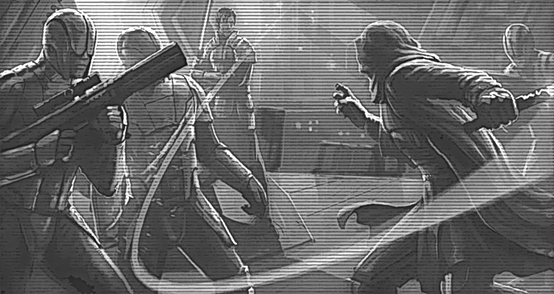

Tales of KOTOR——旧共和国武士彩蛋小集锦
文 Darther
KOTOR （Knights Of The Old Republic，旧共和国武士）是一系列（两部）星球大战旧正史作品，主要讲述的是星球大战：新希望发生前 4000 年左右的历史（ 4000BBY ），其独特的玩法和丰富的世界观以及有趣的思考一直深受星球大战爱好者的喜爱。本文将选取一些两部作品中一些和星战世界观有关的小彩蛋，尤其是和“参考资料”的关系，这些彩蛋为构建星战旧正史更完整的史观有着重要的修饰作用和补充作用。

0 序言
KOTOR系列并非是第一个描写旧共和国时代的作品，在此之前， Tales of Jedi 系列漫画很丰富的描写了旧共和国时代和西斯的历史，这很大程度上成为 KOTOR 系列的基石， KOTOR 系列也有不少与之和其他作品的联系，本文也将主要关注这些联系。至于其他一些游戏本身的“古怪玩法”，和与经典星球大战电影的联系，本文只在有关联时涉猎。本文将以星球为单位介绍，星球的顺序按照旧正史主角的前往顺序安排，并将 KOTOR1 与 2 分开。
为了方便不了解 KOTOR 的读者，这里简述 KOTOR 的开头（当然最好是体验过后再来看此文）：
-
主角是共和国一艘巡洋舰上一个躺着的人，被西斯围攻，士兵们希望你赶紧逃离，最终你乘坐逃生舱到了 Taris 星球……
-
主角是一个前绝地武士，被困在一个采矿设施被西斯追杀，一个老太太帮助你逃离了这里……
另外，参考内容大多都可以在 Wookiepedia 找到，搜索此网站并进入在搜索栏寻找词条即可。
1 KOTOR
1.1 Taris（塔里斯）
Taris是主角第一个到达的星球，主角的主要目标是找到Bastila Shan（巴斯蒂拉 尚）并逃离此星球。
1.1.1 战斗冥想（Battle Meditation）
Carth 称 Basitila 具有战斗冥想的技能，这并不是 KOTOR 的原创，早在 Tales of Jedi 的第一卷《西斯的黄金年代》中就已经提到了这种技巧，其主要作用是打击敌人的士气并提升己方的士气，相当的强大。
不过很遗憾， KOTOR 中 Bastila 从来没有用这个技能对剧情推进有实质性的作用，但是她有这个事情确实引发了很多事件，多少有些讽刺。
1.1.2 Bendak Starkiller
在竞技场，可以遇到这位曼达洛人， Starkiller 是他的绰号，在 Lucas 的最初蓝本里这应是卢克的姓氏，而现在 Starkiller 可谓是烂大街的称号，包括但不限于 Starkiller 基地（EP7），盖伦马雷克的绰号（原力释放）等。
1.2 Dantooine（丹图因）
逃离 Taris 后，主角乘坐乌木鹰号到达 Dantooine ，这里是绝地的一处据点，有不少绝地在此接受训练，包括主角。
1.2.1 Big Hunt
在门口与提列克的老绝地交谈会得知一种名叫 Tarentatek 的恐怖生物，以原力敏感者为猎物，绝地针对他们开启了大猎杀行动，他希望主角能小心这种生物。 Tarentatek 是 KOTOR 的原创生物，后来在其他作品中得到了补充，指出其首次出现是在绝地伊的起源地 Tython （泰桑），西斯饲养了他们，这些故事大约发生在 16899BBY 左右，这一定程度上解释了为何 Korriban 的巢穴中会出现不少 Tarentatek 。
1.2.2 打造光剑
KOTOR1 中打造光剑可谓是敲敲桌子就完事，但值得注意的是主角并没有和绝地传统一样前往伊冷寻找自己适配的水晶，这一原因笔者认为可能有三种：其一是此时绝地还没有这个传统或者视为必须得步骤，其二是主角特殊的身份和紧急的形势让长老会跳过了这个步骤，特别是主角特殊的身份，这让 Vrook 大师一直心有余悸（他每次都在边上说主角要是和 Revan 一样怎么办，虽然这个话有点抽象在很多程度上）其三是制作组懒。
1.2.3 西斯战争与 Exar Kun ，曼达洛战争与瑞文
与 Dorak 交谈，他会告诉你一些近代战争的历史，包括西斯战争和曼达洛战争。西斯战争发生在 KOTOR 时间线 40 年前，是 Tales of Jedi 原创故事。 Exar kun 曾是强大有潜力的绝地学徒，非常渴望知识，而绝地 1000 年来对西斯的知识视作禁书加剧了他的好奇。随着 Onderon 上西斯尊主 Nadd 的阴魂复苏， Exar Kun 趁机来到 Onderon 学习西斯知识，在 Nadd 的阴魂引导下加入西斯并以 Ulic Quel Deroma 为学徒并被 Nadd 的阴魂引导到 Yavin IV （雅文 4 号，即新希望中义军基地所在地）学习更多西斯知识， Nadd 也希望如此能让 Kun 为自己所用，但 Kun 显然更有野心，他彻底消灭了 Nadd 并对绝地发动了突袭，但 Ulic 及时止损引导绝地攻击 Kun ， Kun 退至 Yavin IV 并用西斯仪式吞噬手下来获得灵魂不死，这一效果却让绝地以为他已死并撤退。 Exar Kun 的阴魂在 Yavin IV 呆了 4000 年直到一群新绝地打扰了他。 Kun 企图腐化他们，只可惜对方是卢克天行者……
Exar Kun 的西斯战争的结束方式可谓是比较令人惊讶，但战争的破坏性依然非常严重。不过把战争造成的破坏完全丢给 Exar Kun 的头上笔者以为是不合理的， Nadd 在背后的操纵显然无法忽视，虽然 Kun 最终清理了 Nadd 自立为西斯尊主，但很大程度上 Nadd 是开头的人而不是 Kun 或者 Ulic 。在 KOTOR1 中， Exar Kun 经常被提起，但每个人的陈述都有一定的区别，这也更增添了代入感。这段故事的详细情况可以阅读 Tales of Jedi 系列漫画。
而曼达洛战争则是大约在西斯战争结束后 40 年发生的。曼达洛首领不断试探共和国，而共和国在恢复期选择对曼达洛人的攻击置之不理，但绝地瑞文和他的学徒马拉克不认为如此，并发动了几次反突击和小反攻。但共和国和绝地议会依旧选择不介入，最终曼达洛人和瑞文的军队在 Dxun 发生第一次大规模冲突，拉开曼达洛战争的帷幕。在经历多次战事后，瑞文选择马拉科五号行星（Malachor V）决战，并启动质量阴影发生器（Mass Shadow Generator）将大量绝地和共和国军队与几乎所有曼达洛主力摧毁于行星上。瑞文自己将曼达洛首领斩首，宣布曼达洛战争的胜利。
战争结束之后，瑞文和马拉克消失了一段时间，回来宣称西斯尊主。按照旧正史，这段时间瑞文先是找到了古西斯的残余和维希埃特，试图刺杀维希埃特被抓住洗脑，并派回共和国试探共和国实力，但他们自我清理了记忆自称西斯尊主，找到拉卡塔的星际熔炉并建立自己的西斯帝国。瑞文的想法是彻底改革共和国体制形成更有力的君主制来对抗古西斯残余。但马拉克并不知道这一点。这也导致了马拉克表现出来更多是无节制的杀戮。
1.2.4 远古遗迹
被委员会派去调查远古遗迹，里面会有个 AI 跟你说话，他们称星际熔炉的制造者为“builder”，但不说是谁，可以得知 builder 是拉卡塔人。拉卡塔人也是 KOTOR 原创的种族，曾在共和国建立之前建立无限帝国，但随着帝国扩大和不断的屠杀与奴役，拉卡塔人逐渐得到一种瘟疫并逐渐失去与原力的联系，最终无限帝国被四处起义摧毁。绝地的前身绝地伊与拉卡塔人有不少恩怨，可以在《绝地黎明》系列中找到（Dawn of the Jedi）。拉卡塔人的详细生活特色，政治状况等细节并没有得到完善，有心者可以补充。
1.3 Tatooine（塔图因）
为寻找星际熔炉，主角踏上了寻找其他地图的旅程，按照旧正史的描述，首先前往的是塔图因，星战宇宙中心之一
1.3.1 Gizka
刚下船一个不良商家就会告诉你一群 Gizka 跑到你船上去了，而他们也“很无奈”（指很高兴）。Gizka是 KOTOR 原创生物，酷似青蛙，大部分时候还是挺可爱的，除了被毒死的时候。有证据表明 Gizka 是拉卡塔的生物，原因在于到达Rakata Prime行星后，Gizka会自动下船。同时在飞船残骸处也可以看到活的 Gizka 触雷而死。不过这带来了更诡异的问题，既然Rakata Prime地区受到神庙的力场影响无法离开行星，那商人是怎么获得这些 Rakata 生物还能离开并出售的？这个问题在 KOTOR 和其他作品中都未得到解释，只能初步认为是有些底层西斯想赚外快引起的。
1.3.2 飞梭赛车
在赛车注册处可以和赫特人 motta 要求比赛飞梭车。塔图因也算是飞梭赛车的“起源地”了（ ep1 中安纳金参加的比赛），而在 KOTOR 几个星球上，也就数塔图因的赛道最为艰难，毕竟是非法的赛道。有趣的是，这里的赛车选手也比其他地方更自负，甚至有些人觉得不拿第一不配和自己说话，哪怕是来帮忙也不行，很符合安纳金对沙子的想象。
1.3.3 HK47
在机器人商店可以买到 HK47 ，礼仪和刺杀机器人， 47 的编号应该是致敬杀手 47 。 Hk47 是瑞文在自称西斯尊主后为了清理一些高层人物的机器人，而瑞文疑似主动给他设置了不少黑色幽默，为主角的旅程提供了不少地狱幽默，而他的看法也一般比较极端。通过修理其记忆核心，可以得到其在西斯帝国失散后的几任主人和他们的炸裂故事。其中最为抽象的当属作为一个公司经理的助手被指派清理竞争对手的员工，却最终发现是自家分公司的人，经理遂自尽。其他的故事也非常有趣和多元，读者感兴趣可以自行体验。
1.3.4 泽卡公司
在锚头镇可以找到泽卡公司办事处，他们业务广泛，是银河 500 强，不过也犯了不少罪行，特别是对星球原住民的压迫。在塔图因表现为对塔斯肯人利益的侵犯导致塔斯肯人不断进攻。但没多少人同情塔斯肯人，很可能是因为他们确实像鬼一样，且不会说基本语，这和卡希克伍基人形成鲜明对比。泽卡的经理也表示，他们准备撤离这里，因为这里只有sand！但是事实是 4000 年后锚头镇依然存在，甚至还更大了，不变的是依然被称为垃圾，挺好奇和佩服塔图因的发展政策究竟如何维持这样的地方。
1.3.5 塔斯肯人的史诗
塔斯肯人是主角希望沟通和解的目标，不过事实证明他们可能真的是 animal ，被发现就会被痛击而拒绝说话，哪怕是在“公海”（沙丘海也是海）。与塔斯肯人首领谈判后他们会允许主角与史官对话，但是有期末考试并且没有满绩就要杀头。史官指出沙丘海本来真的是海，但一些奇怪的外来者占领奴役了他们，随后外来者受到瘟疫影响遭到削弱，本地人奋起反抗爆发战争。战争的破坏使得星球渐渐变成了沙子和玻璃包裹的不毛之地，使得他们被迫迁移和重建。因此他们极度痛恨和不信任外来者，认为他们会带来灾难和毁灭。这些最初的外来者被就是拉卡塔人，即 Builder ，这也符合 KOTOR 的叙事逻辑。不过笔者也很好奇，4000年后塔斯肯人还是这些装扮和技术水准（偷别人的），这种进步能力之迟缓被认为是 animal 变得更有说服力。
1.3.6 克雷特龙和第二个星图
在克雷特龙的巢穴中可以看到第二个星图。在一般的观察中，星图往往存在黑暗原力聚集的地方，但值得注意的是，星图所在地也往往伴随着古老的秘密和奇异的野兽，这也是拉卡塔人影响星球生态环境的一种表现，有理由怀疑克雷特龙与拉卡塔人的关系，不过这一点暂时还没有作品可以指认。另外，不禁令人好奇，如果星图一直在这个洞里的话，而克雷特龙一直活着，那么瑞文到底怎么找到并使用的？莫非催眠了吗……
1.4 Kashyyyk（卡希克）
随后主角前往卡希克寻找第二份星图，卡希克是伍基人的故乡，初次登场于……假日特辑，令人汗颜的历史，感兴趣的读者不要观看。
1.4.1 伍基人村庄
在森林内行走一定时间后会到达伍基人村庄，伍基人村庄大多建在高大树木的上层，扎尔巴的哥哥会把他抓进去，可以看到伍基人此时基本是一个原始社会，靠酋长作为首领维系。但扎尔巴的哥哥出卖了自己的种族，和泽卡进行奴隶交易换取钱财，而他们的父亲被流放到了暗影之地（树的下层），可见伍基人酋长在当时是世袭的。
1.4.2 乔利 宾多（Jolee Bindo）
在暗影之地会遇到 Jolee ，他邀请我们作客，在主角帮忙处理了泽卡公司的过度捕杀后会加入我们。 Jolee 透露他因为飞行事故迫降在卡希克，在这里呆到了现在。 Jolee 经历过 Exar Kun 的战争，并且失去了他曾经的女友（投入了黑暗面）。他知道主角的神秘身份，但选择了观察而非直接引导。 Jolee 的思想虽然声称中立但实际偏向光明，在 KOTOR2 中，如果主角选择了中立的道路会有机会获得他的袍服。
1.4.3 Nomi Sundriver
与主角的对话中， Jolee 会提到 Nomi Sunrider（诺米驭日者），一名女性绝地大师，相当霸气的名字，是战斗冥想的大师，活跃年代与 Exar Kun 等人近似。她的绝地之路起源于悲剧，尽管她本就具有原力天赋，但她并不愿意使用，然而其丈夫在路途中被杀死，诺米情急之下爆发了原力天赋赶走了恶棍们，后找到索恩大师学习，在其激励下走上了绝地之路，逐渐成为了战斗冥想的大师，并参与了翁德伦（ Onderon ）的内战。对 Ulic Qel Deroma 有情愫，但依旧无法将其带离黑暗面。西斯战争之后，诺米成为了绝地大师，并跟随瑞文参与了曼达洛战争（离经叛道了）。诺米的死因不明，死亡情况也没有提及，但按照 KOTOR2 的情况来看可能是在马拉科 V 上因为一些原因死去了，当然这只是千万可能性的一种。在 KOTOR2 中选择光明的玩家有机会获得诺米的袍服。
1.4.4 防护门
在暗影之地， Jolee 会引领主角来到一个防护门，这是泽卡公司设置的，通过这个门可以到达暗影之地的深处。 Jolee 表示这些防护门被精准地计算过，不知道这些门的设置是否和星图有关，也许是一种防止破坏星图的保护措施。
1.4.5 初见 Tarentatek 与 Bacca 之剑
在暗影之地深处可以找到一只 Tarentatek ，用蜘蛛的尸体来吸引，有趣的是 Tarentatek 嘴内有半截刀刃，是 Bacca 之剑的一半。 Bacca 之剑是被流放的 Freyyer （扎尔巴的父亲）曾经的佩剑，是伍基酋长的象征，但居然有半截会在 Tarentatek 口中，结合 Freyyer 自己也在附近来看，Freyyer或许和这只野兽有过搏斗， Freyyer 全身而退了，不过可能也因此中毒而呈现疯癫的状态。不过令人惊讶的是，在漫画 Shadows and light 中，这只卡希克的 Tarentatek 在与绝地的战斗中击碎了绝地的刀刃，因而很可能口中是他的刀刃而不是 Freyyer 的。但这就出现了令人汗颜的bug，如果是绝地的刀刃，为何和 bacca 之剑相符合？就算是 Freyyer 借给他了 bacca 之剑也很奇怪，首先伍基首领的剑岂可轻易给予？其次 Freyyer 又是怎么找到刀柄的？这多少令人费解。在 Wiki 中，bacca之剑的历史被写为前任首领与这只 Tarentatek 搏斗之后损失了剑刃，随后留下剑柄作为传承权力的象征。那就更奇怪了，如果剑柄足以作为象征，那为什么 Freyyer 还需要主角找到剑刃来兴复伍室呢……待有心人解答了。
1.4.6 星图与瑞文
暗影之地深处的星图被瑞文设置了保护措施，有神经检查功能，可以检测来访者是否是瑞文，如果瑞文失忆了那么机器将会重新评估其性格是否符合瑞文希望的模式（所以主角是谁呢），机器的提问中，第二第三个问题值得注意。第二个问题提到在面对 10 天后又一次进攻良机，但五天后会遭到攻击的情报时，瑞文会选择忽视被进攻的可能，转而准备 10 天后的攻击。并且在解释中强调瑞文此行是因为“同伴的死亡会激励战士战斗”；第三个问题是当作为统治者遭到内部质疑时，如果有较弱的外来入侵者，瑞文会选择允许入侵者进攻转移内部矛盾，并强调这么做是因为“让民众臣服于自己”。这段对话是为数不多直接探讨瑞文思想的部分。可以看到，瑞文在这两处表现出了用外部矛盾来激励团结的思想，这点在曼达洛战争的后续描写中得到了更充分的体现，在目睹曼达洛人对卡萨的屠杀后，瑞文戴上面具以瑞文（复仇）之名向曼达洛开战，这种做法后来受到了复仇主义的质疑，但不可否认这强烈地激发了其麾下的忠诚。特别地，第三个问题更引出了对曼达洛战争本质的疑问，曼达洛人的能力对瑞文，或者共和国真的有如此可怕吗？瑞文是否有利用不断让曼达洛进攻来增强忠诚与信仰，达到超越击退曼达洛的更宏大的目标？在 KOTOR2 的叙事中，这点有意被引导出来，Kreia作为曾经瑞文的导师，也多次暗示或明示马拉科 V 决战的巨大灾难本身是瑞文用来引导追随者跟随自己接受黑暗的方法之一。因此笔者脑补，曼达洛战争的性质在某些时刻可能被改变，成为瑞文对抗真正西斯的大棋的一部分。当然，这些脑补最终没有得到很好的解释，因为不同作者笔下的瑞文在理解意义上有很大差别，对于 KOTOR2 的主创们来说，瑞文是更接近富有谋略，把握人心的谋略家，而小说瑞文的作者理解中，瑞文可能更接近超强的战士。对瑞文力量的理解不同最终导致了瑞文形象的一定程度分裂。而随着新正史开端，也不太有人会再深耕瑞文的形象和故事完整性了。目前比较被接受的逻辑是瑞文发现了马拉科 5 号上的黑暗能量和 Trayus Academy ，学习了西斯知识后重建了学院，并以此为决战地摧毁大量曼达洛人并把很多绝地坠入黑暗，成为忠诚于自己的部下。
1.4.7 生命树
生命树是伍基神话的一部分，伍基人认为是这些高大的生命巨树带来了卡希克的生命与繁荣，但在瑞文设置的机器上，可以知道星图在这里存在的时间远比伍基人长，甚至比生命树还长，这让扎尔巴感到愤怒。按照机器的解释，他们本来被拉卡塔人制造用于农业刺激来控制生态系统平衡，不过随着拉卡塔人消亡，这些机器被遗弃，但对环境的影响依然保持，最终促成了卡希克的参天大树，因此生命的起源或许严格来说是拉卡塔机器，这对伍基人无疑是重大的打击。不过在新正史，这些部分很可能被删除了，也看不到关于拉卡塔的记载。
1.5 Mannan（马南）
主角前往马南寻找下一片碎片，马南是中立的海洋星球，但不同于卡米诺，这里风平浪静，但却也暗流涌动。这里的中立法案带来了不少有趣的事件。
1.5.1 Frixa 和 Kolto
在马南海底，主角可以找到星图，共和国在此建造了一个 Kolto 采集站，但这一采集行动引发了海兽 Firxa （一种鲨鱼）的暴怒，也使得采集站的 Selkath 人疯狂，经过调查这可能是因为采集触怒了海底怪兽，那在 selkath 人的传说中是他们的祖先。可以认识到 Frixa 和 Selkath 人应该都是这只海兽的后代，而他们狂暴很可能是因为收到了“主母”大海怪的呼唤。而在摧毁采集设施后，海怪就会恢复平静。有趣的是，大海怪会守在星图旁边，这是否意味着海怪本身也和拉卡塔人有关？或许和生命树一样，也是某种科技的副作用？但似乎没有后续作品补充这些问题了。（在笔者认知内）
1.6 Korriban（科里班）
最后一块碎片位于科里班，在这之前， Bastila 被马拉克抓走；就算玩家前往的时候没有让这一事件发生， Bastila 还是会为了避开西斯耳目而选择不下船。科里班是西斯圣地，有着众多遗迹，其中很多被放在黑暗尊主之谷。
1.6.1 西斯学院
根据漫画 shadows and light ，这是西斯战争之后西斯残余自己创立的学院，而长老会居然暂时无暇管理，这表明这里的西斯可能只是被瑞文收编了而不一定是瑞文的曼达洛战争直系部队，这某种程度也能解释为何西斯学院的人都不认识主角。
1.6.2 Valley of Dark Lords(黑暗尊主之谷)
在西斯学院的后门向外走就是黑暗尊主之谷，这是科里班的西斯对自己历史上具有重大意义的君主的纪念，众多西斯的墓穴被建在这里。黑暗尊主之谷的灵感来源于埃及帝王谷，不过相对于现实，这里的神奇事物多得多。不过，不同作品的黑暗尊主之谷的描绘有很多不同。比如在 KOTOR 中，四座陵墓的排列非常整齐，对称放置，周围也没有神奇的雕塑。不过到了Jedi Academy的中，对 Ragnos 的陵墓描绘则充满金字塔类的建筑，Ragnos本人的陵墓门口做成了他自己的形象，内部也是错综复杂。笔者理解为陵墓可能也会翻修。不过拿现实来对照，从帝王谷到金字塔似乎很合理，算是一个有趣的对应。
1.6.3 洞穴与Tarentatek
在黑暗尊主之谷的一个洞穴内，主角可以找到一些逃亡的西斯和一只拦路的 Tarentatek 。在漫画shadows and light中，这只怪兽杀死了 Daron Qel Deroma ，他的袍服可以在击败怪兽后在后面找到（功利来讲，这是光明面除星际熔炉袍外最好的一个）。而他的情人在看到他被杀死后前往 naga sadow 的墓被两只 tarentatek 击杀。这也是 shadows and light 的剧情。但笔者个人觉得这个剧情实在有点多余，要寻死直接朝着面前那只送不就行了，说不定还能爆点装备，这样就不用主角一个个刷了。
1.6.4 四个陵墓
在本作描绘的黑暗尊主之谷中，有四个对称排布的陵墓，从正对入口面向峡谷为正方向来看，左下是 Marka Ragnos ，右下是 Ajunta Pall ，右上是 Tulak Hord ，左上是 Naga Sadow 的陵墓。
Marka Ragnos 是西斯在超空间大战之前的最后一个西斯君主，他经常作为幽魂的形式介入影响世界，算是西斯古老法术的熟练使用者。 Ragnos 的大多数出现形象都是幽魂，包括他在 Tales of Jedi 中第一次出场的形象。在他之后 Naga Sadow 发动了超空间大战入侵共和国，最终惨败收场。在绝地学院游戏中，一群人希望复活他的灵魂， Jaden Korr（主角）成功击败了他的灵魂，阻止了他的复活。而在这其中也有两个有趣的事实。其一是 Jaden 此时刚刚晋升为绝地武士，是教导主任凯尔卡塔恩的徒弟。在玩家的操控下 Jaden 可谓是旧正史龙傲天， Rey Palpatine 可能也很难与之匹敌，不过后续作品并没有继续让他龙下去。其二是绝地学院中的 Ragnos 陵墓已经彻底变成金字塔风格的建筑，完全不是 KOTOR 中一个走廊走到底的简约风格，至于绝地学院中那成群的金字塔中是否有其他著名西斯的陵墓暂时不得而知。总的来说，Ragnos是一个主要以阴魂形式存在的人物，但他基本没真正影响什么东西。此外，游戏中他的陵墓如果用潜行进入主墓室，有机会修复机器人。
Ajunta Pall 是初代西斯尊主，当初从被绝地流放的“黑暗绝地”的一员，也是 Tales of Jedi 原创角色，不过从来没露面， KOTOR 算是第一个创造其形象的作品。 Ajunta 被流放后，到达科里班，征服了西斯人并自立为君，号称“黑暗西斯尊主”，创立了黑暗绝地统治西斯人的新历史，将绝地的历史带入一个新的阶段，西斯最终如众所周知的那样成为了绝地的“死敌”，它有着不可推卸的责任。但不得不说游戏中他的逼格非常低，长得没比寻常西斯有什么差别，而且实力在游戏中也相当一般。在旧正史中，主角拯救了 Ajunta 使得他灵魂归于原力。不过从游戏的角度其实无伤大雅，反正你都能拿到剑。
Tulak Hord 是 KOTOR 原创角色，但甚至都没有太多关于他的信息在陵墓中，之后在 KOTOR2 中倒是补充了他是光剑战斗的大师，他的形象直到 TOR 的瑞文之影 DLC 才出现，当然是一个灵魂的形式，他的主要表现都在 TOR 网游中，有兴趣的读者可以去了解或者游玩（有点贵）。KOTOR中他的存在基本是为了引出前校长的工具墓穴。
Naga Sadow 是一个传奇西斯尊主，是打开超空间大战的西斯尊主，开创了西斯和共和国多年的战争历史。最初， Naga Sadow 和 Ludo Kressh 是 Ragnos 之后最有实力的两个领导人，他们都想争夺西斯尊主的称号。这一期间西斯尚未找到通往共和国疆域的超空间航道一次偶然的契机，急于求生的 Khar Shian 和 Jori 兄妹随机输入超空间坐标来到了科里班，二人具有一定的原力天赋，但没有得到训练的机会，发现二人后，西斯抓住了他们。Naga Sadow 意识到这是一个很好的契机来反攻共和国。于是 Sadow 将二人分开，一边将兄长 Shian 孤立，一边对妹妹 Jori 表示自己想帮助对方返回共和国，而 Kressh 会阻止他们。渐渐地，Jori逐渐被 Sadow 说服并和 Sadow 一起逐步修理并夺回被 Kressh 扣押的飞船，并诱导 Kressh 发动攻击从而可以借机清理 Kressh 的势力，计划比较成功，Jori带着飞船离开，而这会给 Sadow 足够的信息找到前往共和国的超空间航道，而 Kressh 的飞船在 Jori 逃亡时被摧毁。同时也让 Shian 失去信心归降于 Sadow。于是 Sadow 宣布 Kressh 已死并自立为西斯尊主，通过 Khar 兄妹留下的航道进攻共和国，以 Shian 为指挥官。起初突袭非常成功，但随着西斯的无情毁灭与不仁， Khar Shian 认识到了西斯的黑暗背叛了Sadow，暴露了 Sadow 的位置，同时绝地大师们逐渐识破了 Sadow 的西斯幻影制造的幻影飞船并开始反攻。Sadow 遭到围攻，被迫撤退，军队死伤大半，但 Shian 不幸牺牲。回到科里班后，他发现 Kressh 居然没有死亡，并发动了对他的弹劾战争，而共和国也追踪过来发动轰炸。在内忧外患之下，古西斯帝国瞬间崩溃，Sadow 带着自己的飞船惊险逃亡，在 Yavin IV 建立基地试图东山再起，但他余生再也没有离开此地。Naga Sadow 被视为传奇而强大的西斯尊主，但笔者就此故事而言认为 Sadow 言过其实，谋略不足。虽然不可否认 Sadow 在面对进攻共和国的机会时充分发挥了谋略，几乎达到了自己所有的目的，但这种谋略基本是对于两个普通人奏效的，并不能反映其谋略高于常人，况且 Kressh 根本没上当，用替身代替了自己。而此后 Sadow 在面对机会时极度缺乏谨慎甚至可以说自负。居然将 Shian 作为大军指挥，而不留任何后路完全忽略了其妹妹还在共和国的事实，也忽略了其面对惨烈情景回心转意的可能，是完全对大军和自己不负责任也极欠考虑的。同时利用西斯法术制造幻影则是对绝地们的严重低估，而这也反映出更严重的问题即缺乏侦查。Sadow 甚至没有派出侦查舰队试探共和国的实力就直接不留后路的全力进攻，这可以说是灾难级的指挥，比曼达洛战争中曼达洛人一直保持先试探后大规模开战的策略差距明显，最后内忧外患袭来，直接导致古西斯帝国灭亡也顺理成章。总的来看，Naga Sadow 的谋略只能以普通冠之，而考虑周全性方面则一塌糊涂，尽管描述中他的西斯炼金术等法术造诣超群，但笔者也难以将其列为英明君主的范围，只能是一个强大的战士或将军和亡国之君。不过看起来西斯还是很尊敬他的。而在 KOTOR 中，他的墓穴中有两只 Tarentatek ，并且居然有星图，这点实在太令人费解，没有任何证据表明 Sadow 与拉卡塔有联系。至于瑞文将星图搬入其中的可能就更小了，星图本身是拉卡塔机器，不知道运作的方式也不知道如何移动，同时 Uthar 的对话中也指出瑞文就是在墓中拿到的，这中间的故事目前似乎无人补充，有心者可试图补充之。
1.7 Rakata Prime（拉卡塔主行星）
在收集完星际熔炉的地图后，主角来到星际熔炉面对马拉克，不过被引力场拉到拉卡塔主行星上，这里住着一些残留的拉卡塔部落。
1.7.1 曼达洛人
在神殿的附近，可以找到一些曼达洛人，这些曼达洛人来历不明，似乎长期呆在行星上，这还蛮诡异的，这些曼达洛人的来历和去向都不为人知，只是出现然后攻击然后暴死，没留下什么信息，令人疑惑。推测这可能和曼达洛战争有关，或许是部分战败的曼达洛人追随瑞文的结果，但这仅仅是猜测，没有任何根据，因为本来就没有。
1.7.2 马拉克
在最后主角会和马拉克决斗，马拉克在现在的版本必死无疑，不过在原本的废案中其实可以在击败他之后治疗他把他带回。估计生软觉得这样的剧情太逆天而删去，不过还是保留了输入作弊代码可以把马拉克变成舞女的彩蛋。另外，如果玩家修炼了吸血技能，其实是可以把马拉克的俘虏给吸掉的，这会让马拉克变成事实上的最菜 BOSS 。
以上便是 KOTOR1 的一些有趣的彩蛋集锦。总的而言 KOTOR1 基本来源于 Tales of Jedi 系列并引出了不少新设定，让旧共和国时代有了新的作品基础，是相当不错的。不过其中对于原力的认识和光暗的区别也比较保守和绝对，可以看到光明选项基本就是老好人，而黑暗选项就是发电。而接下来的 KOTOR2 则在这些方面进行了更新颖的探讨。
2 KOTOR2：Sith Lords
KOTOR2的剧情更压抑和具有神秘色彩，因此相比 KOTOR1 更加推荐先至少体验一遍剧情再来阅读此文。由于本作很容易遗漏彩蛋和隐藏剧情且很难找到攻略，因此本文将会详细一些。开始时首先注意，男角和女角会有不一样的走向，可以多次尝试。另外，本文沿用模组 TSLRCM 的内容，在 steam 的KOTOR2创意工坊中搜索 TSLRCM 即可找到，是很好的故事补全模组。
2.1 Peragus II
主角会在Peragus II中醒来，主角是一个前绝地，因为一些原因被流放，称为放逐者，从共和国巡洋舰 Harbinger 处被机器人T3-M4带到此处。Peragus II是一个采矿设施。
2.1.1 Keria
在停尸间会找到 Keria ，一个老太太，她是主角的 mentor ，也是谋略家，哲学思想家。Keria在本作中无疑是最核心的人物，是整个剧情的核心策划。其对原力不少有趣的看法也是对原力的重新塑造之一，相比于 KOTOR1 中相对比较极端的塑造更进一步。由于 Keria 的相关内容过多，将会根据出现时间和星球来分别讨论。另外，要注意存档来保持 Kreia 对你的好感，否则会损失大量剧情，得不偿失。
2.1.2 Atton的对话与瑞文
在设定上，主角和银河事物脱离已久，基本不知道在曼达洛战争之后发生了什么，于是在于 Atton 的对话巧妙地借此补全瑞文的设定。如果你不耐烦的说 I don’t care（事实上瑞文在记忆逐渐苏醒后第一个想到的就是放逐者），那么就会默认为男性光明面，这也是旧正史的设定。当然，之所以主角说的有意义是因为主角曾经也是瑞文军队的一员，但在曼达洛战争结束后没有加入西斯，而是干了些别的事情。
2.1.3 Harbinger
主角试图从外部进入采矿场的寝室区域察看，路途中一艘巨大的巡洋舰停靠过来，这就是主角昏迷前所在的 Harbinger 。 Harbinger 的内部被“西斯”占领，在医疗舱可以看到一些关于这些西斯的记录，这表明西斯的目的就是寻找主角并清理掉主角（但为什么呢）。在离开 Harbinger 的时候，Kreia 与西斯 Darth Sion 决斗并损失了一只手（传统艺能），在对话中表明两人曾经是师徒关系，战斗中 Sion 表示她的教诲已经不再在他脑中回荡，这为最终决战做下照应。
2.1.4 Peragus的毁灭
通过不断调查各类复杂的影像和声音记录，主角可以发现自己的到来让整个矿场产生了混乱并造成内斗，间接或直接造成了机器人失控和矿场毁灭。而这种跟随主角到来引发的混乱也是本作的一大核心叙事问题，这些细节表现的侧面描写也很有趣，但私以为此处黑曜石可能有虎头蛇尾的嫌疑。黑曜石显然想做更多更有趣和细节的刻画，但由于逆天 ddl 导致本作的发售版变成了严重的虎头蛇尾的烂尾作品，也让 Peragus2 的剧情对新玩家而言显得又臭又长。尽管 TSLRCM 的作者们努力还原了很多剧情和内容但恐怕也与黑曜石本来的野心相去甚远，只能说一声遗憾了。目前 KOTOR 的重制遥遥无期，期待原先主创们再续前缘把 KOTOR2 彻底完成恐怕也不可能了。
2.1.5 Keria的经历
在与 Keria 的关系足够好时，在船上可以和 Keria 交流他的过去，从这时开始，Keria会开始灌输他的思考。主角可以问他的身份，西斯还是绝地。Keria会表示这并不重要，但也会承认自己曾经是西斯尊主，Darth Sion 和 Darth Nilhilus 都是自己的徒弟，但他们上位击败了自己并将自己流放。但她对自己寻找主角的原因则闭口不言。特别地，在这里过于关心 Kreia 的伤势虽然会增加光明面但会被 Kreia 认为同理心过剩而失去不少好感，这也是 Kreia 的独特复杂性格，因此玩家也应该多在和她对话之前存档。
2.1.6 Darth Nilhilus的实力之迷
Darth Nilhilus 可以说是除了电影出现的西斯外最知名的西斯尊主，主要可能来自于鬼魅一般的相貌和夸张的表现力。他最惊人的能力就是吸干整个星球的生命力满足自己的饥饿感。这种表现力看起来甚至不比维希埃特弱多少。因此也出现认为 Nilhilus 的实力远超各大西斯尊主的说法，包括瑞文。不过有趣的是，角色自己的作者却并不这么认为，他认为 Nilhilus 远不如瑞文。这看起来似乎有点离谱，不过笔者认为这是有必然性的。Nilhilus 创作时被设定为在 Malachor V 不断吸食生命力维持自己生存的怪物，随着时间流逝，他的饥渴越来越难以满足以至于需要一口气吸食整个星球来满足自己。但重点不在于他能吸干，而在于他为什么吸干——满足欲望。而 Kreia 对他的态度也一定程度反映了主创们的态度：一个怪物，但是被自己的饥渴和欲望奴役，只是一个奴隶而已。在主创们眼中和 Keria 眼中这样的“实力”只是表象，他的欲望太过明显也太具有主导性，这会导致 Nilhilus 极其容易被操控，只要说有东西给他吸他就会毫不犹豫上钩，这也是最终决战中对付 Nilhilus 的计策。因此主创们认为他不足为惧应当是有自己的创作思想的，在表现力上他可能很夸张，但作为一个对手他太容易预测，说他完全不如瑞文，维达是相当合理的。这也体现了主创们在创作 KOTOR2 的思想和对力量的诠释。力量不来自于多夸张的表现力和原力能力，思想教诲的传播影响和操控局势的能力才能体现真正的强大，在这个意义下瑞文无疑是强悍的，而 Nilhilus 则一无是处，只能带来毁灭和伤疤。
2.2 Telos IV
在逃离 Peragus 后，主角选择到重建中的Telos IV空间站落脚。 Telos IV 是 1 代角色 Carth 的故乡，被马拉克可能是出于赌气摧毁（赌气的说法来源于短片“瑞文”），到了本作时间线 Telos 正在接受伊索人的重建工程。降落后乌木鹰号被神秘人物偷走到 Telos IV 地表。
2.2.1 绝地和普通人
趁主角睡着， Atton 和 Keria 会有一次关于绝地和普通人的对话。Keria表示绝地失去原力可能还不如普通人的技能丰富。比如 Atton 现在虽然并非绝地却精通各类驾驶技术和射击技术，称得上能人。这一想法让 Kreia 对原力的态度初见端倪：身外之物，不足为信。在后来他也会指责绝地把一切放在原力上，这是将自我的命运交给原力，称不上力量也看不到真相。而相应的，当主角过多的使用原力，比如控心术，Keria 也会指责你过度使用身外之物而不能用自己的魅力和说理来说服他人，是投机取巧而非实力的体现。这种看法为最终 Keria 的计划产生了铺垫。
2.2.2 伊索人还是泽卡公司
在主角被关的时候，伊索人和泽卡公司会打电话来请主角帮忙。泽卡希望停止伊索人的重建，而伊索人则希望把泽卡赶走。完成所有帮助后，泽卡会给不少钱而伊索人则会画饼。Kreia明显更偏向选择泽卡因为虽然他们的作为具有破坏性，但会给到主角急需的资源。这也一定程度体现 Kreia 认为吸取急需的资源比当老好人更加重要，但也不能忽视其中的破坏性，这为 Kreia 对主角的态度埋下了一定伏笔。
2.2.3 遭到攻击
无论是帮助泽卡公司或是伊索人，在主要的工作完成后他们都会遭到攻击，这也是 Keria 力量课堂的一部分。伊索人的几乎所有困难问题都是主角处理的，而泽卡公司虽然很有钱雇佣了很多人来为其打工，但自身却没有核心的武装力量而遭到交易帮（The Exchange）的袭击。这都是自身力量不足的体现，依靠外部力量来解决问题但自身不足，都会最终为自己带来灾祸。
2.2.4 Carth
在主角离开空间站前往地表寻找乌木鹰号时， Carth 带着共和国舰队来到这里。通过他和空间站管理员的对话可以得知空间站有意滞留主角，但 Carth 到来后表示不需要滞留了，有别的计划。这是最终决战 Nilhilus 的伏笔，而且也暗示了和神秘人有关。事实上 Harbinger 本来就是前往 Telos IV 的，也是来自共和国的护送，不过被西斯袭击了才致使主角经历这一些。
2.2.5 Bao-Dur
前往地表的时候会被击落，这时会遇到 Bao-Dur ，扎布拉克人（摩尔同族），性格比较温柔。但他其实是主角曾经的部下，并且负责建造了质量阴影发生器（ Mass Shadow Generator ）。他损失了一只手臂（再次经典传统），用机械装置替代。现在的Bao-Dur是一个机械师，精通机械装置。 Bao-Dur 在后来也可以被主角转为绝地武士，而他的转职条件相对比较简单，只要好感足够就可以了。 Bao-Dur 经历过战争的残酷，因而在性格上更“好解斗”，并十分忠诚。过于残暴可能会使他对主角的好感下降。 Bao-Dur 精通各类支援技能，同时可以打破护盾，是破解护盾的利器。在 KOTOR2 中似乎没有明写他的结局，不过根据 HK47 前往机器人工厂和其留下影像要求摧毁 Malchor V 来看，Bao-Dur可能在某一时刻牺牲了。事实上无论是原版还是 TSLRCM 修复版 Bao-Dur 在科里班作为幻像出现后存在感都很低，在最终决战更是只留下了影像，也没有以活人的形式出现在任何情节和过场，更没有提到他的未来（最后 Kreia 会和主角探讨众人的未来），故而其死亡的推测是合理的。
2.2.6 HK50
在Telos IV行走时会被一群 HK50 追杀，他们也是瑞文制造，不过生产线随着瑞文失忆和大权旁落而停摆，这时的 HK50 则是被共和国大间谍GO-TO重新恢复生产的，追杀主角。GO-TO另一个身份是The Exchange的老大。最后 HK50 的生产线被 HK47 单骑闯关摧毁，这是 TSLRCM 修复的内容，但要求比较麻烦，首先要修复HK47，然后给 HK47 展示关于机器人工厂的信息，这样 HK47 会表示有更多信息就可以找到工厂并摧毁。此后带着 HK47 和三批 HK50 交战，这样最后Malachor V的剧情之前就会自动添加 HK47 的补充情节。另外有趣的是，如果带着 HK47 和HK50对战，HK47会因为协议不能向 HK50 开火。
2.2.7 Atris的学院
在主角发现星球极点有问题后，主角会来到那里（然后被 HK50 干下来），这里坐落着一个神秘的学院，主人是 Atris ，绝地大师。Atris 是当时科洛桑绝地圣殿中长老会的代表人物之一。Kreia 在进入时表示学院内的时候表示这里的学员都有厚重的思想壁垒，很难探知他们的思想，并自言自语“ Atris 你可真是大聪明”，表明 Kreia 和 Atris 有联系。但有趣的是在整个主角呆在学院的时间内 Atris 和 Kreia 却没有更多的交流， Atris 也没有接见 Kreia ，但这终将得到解答。 Atris 学院的学员旨在学习利用锻炼思维壁垒防止受到原力的探知和影响，这也和 Atris 对原力的新认识有关。
2.2.8 主角的过往
Atris 和主角是老相识了，在 Malchor V 决战后，主角发现自己与原力失去了联系，而且瑞文的部下只有主角回到了绝地长老会，并被剥夺绝地的称号并流放。 Atris 和主角在这里会又一次争论对于曼达洛战争的性质和主角的想法。很大程度上也是引导玩家思考这些问题，这种看法将决定玩家手中的放逐者性格，而这也算是玩家自己性格在投射，因而还是推荐一周目尽可能全情地投入其中。这中间也出现了对瑞文行为的几种理解和指控，不过还是主要围绕着“瑞文不打会咋样”和“瑞文不听话堕入黑暗”来讨论，却可能忽略这些都有统一的逻辑的可能。吵完架后， Atris 让主角离开但没有还给他光剑，不过可以驾驶乌木鹰号离开。Atris 在这段对话体现出了对主角强烈的情绪，不过暂且不知道原因。 Atris 好四个绝地大师在决战后将其流放，而现在面临西斯的威胁，主角也希望再次找到他们，但主角是想寻求复仇还是盟友，就要看玩家的了。接下来的剧情将围绕主角为何失去原力的真相和对抗西斯的威胁为主线展开。
2.2.9 Atton 的思想
在监狱中，Kreia 探知了 Atton 的思想，有一些事情 Atton 没有告诉主角，并且很不想让主角知道，Kreia便以此为质，控制 Atton 。如果最后 Atton 告诉了主角此事，他会找到 Kreia 说她再也控制不了他了。Kreia 则会指出 Atton 是个蠢蛋，Kreia从来没有控制过他，只有他自己的心锁住了行动。这也算是 Kreia 对主角的一种教导，用别人自己的枷锁套住自己，这和她对付 Nilhilus 的计策异曲同工，利用 Nilhilus 的贪婪制造决战的场面。
2.2.10 最后的侍女
如果主角是男性，那么乌木鹰离开的时候最后的侍女 Handmeiden 会登上船与主角同行。她对 Atris 的作为有诸多的好奇，并好奇为何主角让 Atris 如此道心破碎。从此，主角正式踏上了对抗西斯的主线，也进入寻找自我和宇宙真相的过程。另外有趣的是，如果主角是男性并且在和 Handmeiden 搞好关系之前就和 Visas 对话，那 Handmeiden 会疯狂吃醋并不理睬主角，在内容上是相当要命的损失。
2.3 Nar Shaddaa（纳沙达）
在主角离开 Telos IV 后，主角正式开始寻找几个失散的绝地大师，首先是在 Nar shaddaa 的。Nar shaddaa 是一个犯罪都市，充满了黑帮。新正史依然有这个星球，定位也依然是犯罪都市，在诸如星球大战漫威主线刊等作品中出现过，不过风格确实略有不同。
2.3.1 最快速地获得光剑
这里先提一个最速拿光剑的办法，去找 Lootra 找到他的妻子或者直接处理掉他就能获得一个部件，然后回船上和 visas 决斗获得。
2.3.2 如何应对乞丐
在难民营附近，会有一个乞丐乞求主角施舍，这里主角要么给要么轰他走（没别的选择），不论哪种 Kreia 都会骂主角。这是一段相当有趣的演出，当主角给钱，她会指责小恩惠并不一定带来真正的好处，施舍很可能使他成为众人的眼中钉而造成悲剧；而当主角轰他走，Kreia 会指责主角无意义的暴怒会造成更深的黑暗，不会带来任何好处只是在满足自己的变态欲望。可见 Kreia 和故事一直在试图强调小作为的影响和不自强的恶果，这最终和 Kreia 对原力的理解有着不浅的联系。
2.3.3 瑞文
好感足够的时候， Kreia 会告诉主角自己曾经是瑞文的导师，他指出瑞文的原力力量强大，懂得操控，是伟大的谋略家，并指出瑞文可能从未真正堕落，有时堕落和牺牲的区别难以分辨……这也是对瑞文行为的再塑造，最终 Kreia 会指出瑞文的黑暗面行为实质是通过建立强大的集权制国家来对抗古代西斯的残余，而 Malchor V 的毁灭，西斯帝国的建立都与这有关。这样的描写和 KOTOR1 的精神应当是比较接近的，笔者也以为这样的处理胜于小说《瑞文》，瑞文的强大从来不是原力造诣上顶天立地，而是把握人心操控万物。
2.3.4 联系 Exchange
主角希望找到 Exchange 来获得关于绝地大师的情报。不过方法该如何呢？一种是不断救人来获得注意，一种是解决难民抵抗问题。善良的玩家可能会选择前者，但这样需要跑来跑去并花费大量钱财，这会被 Kreia 所不齿，这样的帮助没有真正让难民获得了抵抗强权的根本，反而耗费了许多钱财，吃力不讨好；而也可以选择说服一些难民主动寻死造成士气下降而向 Exchange 投降，这样只言片语就获得了巨大影响并被引见给Exchange，Kreia对这样的行为大为赞赏。这时 Kreia 再次强调操控人心和增加扰动的控制力的重要性，但一定要有目的和意义，否则无意义的杀死难民也依然会被 Kreia 所不齿。
2.3.5 Mira或Hanharr
如果主角是光明的，mira会加入队伍并代替你前往酒吧；而如果是黑暗的，伍基人 hanharr 会加入。Hanharr与 mira 有着复杂的恩怨情仇，曾经 hanharr 试图捕杀 mira ，但 mira 发现了这一点并将计就计让 hanharr 设置的炸弹炸伤了 hanharr 自己。但爆炸后 mira 却选择救他一命，这造成了极其讽刺和黑暗的关系，按照伍基传统，hanharr 欠了 mira 生命债，但 hanharr 心里却想要杀死 mira 。对 hanharr 来说，生命债封锁了他的欲望，生不如死。剧情里也可以看到 hanharr 一直在试图找到正当机会杀死 mira ，这种关系和汉与丘巴卡可谓是另一个极端。选择 mira 的话主角有机会把她训练为绝地，而 hanharr 不能。不过和 Kreia 聊起 hanharr，可以认识到其生命债传统和杀戮欲望已经成为限制他操控他的枷锁，就像 Nilhilus 一样（不过论实力肯定远不如 Nilhilus 危险），于是可以轻易将其为自己所用，是很好的力量补充，并获得加成。而不同于 Nilhilus，他的这种死磕于生命债传统让他被伍基文化严重束缚，可以称得上是文化的奴隶，称不上真正强大的力量，最危险的情况就会是 KOTOR1 中黑暗面走向，这会让扎尔巴被迫杀死好友米申，文化的枷锁摧毁了这样的伍基人的人生。或许瑞文解救了被物理上奴役，但或许在心灵上他们一直是自己文化的努力。此外如果玩家真正理解了 Kreia 之前多次在强调的对力量的论说，就会出现并可选择下一个选项“我不需要这种力量，身外之物不足以称为自己的能力”，将对力量的理解做到自洽。这也是游戏中最后一次在剧情内 Kreia 谈起对力量的理解，这样的思想很明显接近存在主义。不过在更琐碎的时候，如使用控心术，频繁让他人帮忙做事，Kreia就会再次强调力量应当来源于自强而不要过分仰仗他人或原力。而她认为原力也是身外之物则暗合了她对原力的理解。
2.3.6 Visas
在回到船上后会遇到 Nilhilus 派来的刺客Visas，她是一个 miraluka 人。Miraluka不是原创的种族，在Tales of Jedi就出现过，他们没有正常的视力，透过原力观察事物。Kreia也学习了这种技能，合适的时候主角也能学会。Visas之所以成为 Nilhilus 的手下是因为 Nilhilus 将其家乡 Katarr 吸干而留下了她作为见证者。事实上 Katarr 的毁灭也是主线的一部分，Atris试图通过引诱 Nilhilus 到Katarr来一举消灭他（这也体现出 Nilhilus 是多么容易被操控），但他的能力超乎了 Atris 的想象，于是只能看着 Katarr 被焚尽，自己只身逃离。Visas的臣服更多是来自于恐惧，而他也明白 Nilhilus 的存在只会毁灭一切事物，因此很快加入主角来消灭西斯。Visas和 Nilhilus 有原力纽带，因此 Kreia 认为在适当的时候放弃 Visas 来削弱 Nilhilus 是必要的，不过主角也可以选择让 Visas 战胜他。
2.4 Dantooine（丹图因）
第二位大师Vrook，也就是在 KOTOR1 中不断反对和担忧让主角参与计划的那位，在西斯的袭击下逃到了老绝地据点丹图因，这里被马拉克清理后百废待兴，拾荒者不计其数。
2.4.1 曼达洛的决斗
如果带着 Canderous，并在平原遇到一组曼达洛人，那他们的首领会向 Canderous 挑战。Canderous 在绝地内战结束后被瑞文任命为下一个大首领，而他也在这期间收纳各族流落的曼达洛人。事实上，当初瑞文击败了前任首领后拒绝归还曼达洛面具致使曼达洛人分裂流落，而现在又允许 Canderous 重新戴上面具，表明了瑞文一定程度上心态的变化。
2.4.2 破碎的真相
在召集所有绝地大师后，他们会在重建的绝地学院内告诉主角真相。这段演出非常精彩，几个对偶成功体现了绝地和 Kreia 在原力认知上的差异。事实是主角在面对 Malchor V的尖啸后自觉放弃了和原力的联系，这让她自己成为了原力的空洞和伤疤，也让自己失去和原力的联系。在这其中绝地大师们看到了原力的死亡和主角对原力的失聪，但 Kreia 却恰恰指出她在这其中看到了复生的希望和对世界的顿悟——抛开原力观看世界，但绝地大师们做不到，正如 Kreia 的判断，失去了原力他们一无是处。为此绝地大师选择将主角再次流放。Kreia 急忙阻止了他们并抽去了他们的原力。大师们无法承受没有原力的世界，自我了断了。这是本作的大高潮，值得反复品味，Kreia在这里尖锐地指出了绝地只透过原力本身观察是不能理解原力的，而主角给出了另一种可能但他们拒绝承认。同时在 TSLRCM 的修复后，Kreia 也指出了瑞文黑化和 Malachor V的真相，他希望借助 Malchor V 的灾难建立更专权和强大的军事体系来对抗远古西斯，是破釜沉舟的牺牲而非单纯地被杀戮腐化。而这样对瑞文的理解也是笔者更为欣赏的，相比于后来补充所谓瑞文马拉克单骑闯关不成而洗脑之理论，瑞文的形象被严重收到洗脑影响而不能很好体现自己的雄才大略，但木已成舟。此外有趣的是，旧正史也依然认可了瑞文找到 Trayus 学院后决定创建更强大力量对抗古西斯而选择自我黑化和建造 HK47 系列来革命共和国的计划，这样瑞文的黑化便有了前后两层的呼应。不过笔者以为这样的处理更合理化了马拉克的情况和他的残暴，毕竟他没有和瑞文一起参悟到瑞文计划的核心。
2.4.3 Mical
如果主角是女性，在绝地学院图书馆可以找到在研究历史的 Mical 并让他加入自己。Mical 指出对 Exar Kun 等人的战争的不同看法，指出对于大众来说，绝地和西斯并没有太大区别，就像是不同教派那样。Kreia 也会指出，绝地和西斯的教义都很难接近原力的真相，绝地太过唯信原力，一切保持平和跟随原力的意志；而西斯则选择让原力解放自己，但也会被原力控制都将主要的力量交给原力而不是自己，这是两者的最大局限性之一。Mical 曾经是绝地学徒不过没有导师选他（颇有种考研即视感），因而没有成为绝地武士。曾是幼徒的他对主角有一些特殊感情，也延续到了现在。Kreia 评价他为傻白甜，对主角的感情严重控制了他的行为，这让他比其他人甚至其实更容易控制。Mical 最终会成为 Kreia 决战中很重要的棋子。
2.4.4 水晶洞
本作水晶洞依然保留，不过可以拿到一个主角专属水晶，属性非常逆天，但要记得取下来让 Keria 帮忙升级（因此也建议及时找到这个水晶）。
2.5 Korriban（科里班）
第三个目的地是科里班，科里班上的绝地大师已经死在了牢笼中。不过在这里主角接触到了西斯的远古记忆。
2.5.1 四个陵墓
依然，四个陵墓屹立在这里，Kreia 会对这四个君主作评价，基本都是在 KOTOR1 讲述过的部分。不过有趣的是对于 Ajunta Pall ， Kreia 指出瑞文的做法欠妥，对于长期身居黑暗，杀伐无度的人，应当给予惩罚而不配得到救赎。在一定程度上类似于以直报怨的想法。本作无法进入任意一个陵墓。
2.5.2 全息仪
如果主角选择黑暗瑞文线路，会看到一个全息仪包含巴斯蒂拉留守星际熔炉，而瑞文自己则前往未知领域寻找西斯的剧情，而如果选择光明瑞文就没有。但相应地，光明瑞文可以在T3-M4好感足够和修理技能足够后看到巴斯蒂拉的影像，关于瑞文前往未知区域的记载。
2.5.3 陵墓
在洞穴深处，相较于 KOTOR1 多出了一个可以进入的陵墓。陵墓中原力点不会自动恢复，需要谨慎使用。这个陵墓中精彩的幻象和自我怀疑演出是 KOTOR1 所不具有的。主要的考验包括三个部分：重走曼达洛战争、在 Kreia 和同伴中选择、面对自己和瑞文。第一站是重走曼达洛战争。在经历了和 Cassus Fett 作战的失败后，瑞文决定扩大战争规模，在 Dxun 发动强大攻势来试图找到曼达洛人的弱点。主角是这场战斗的指挥官，她曾经目睹数千人在森林中死亡。 Dxun 战役最终以瑞文的胜利告终，但瑞文的损失远远超过了曼达洛军队；选择 Kreia 还是同伴算是一个决战的预演，也算是一种对思想，情感的选择。Kreia 在这里显示为西斯，众人要消灭他，但 Kreia 一是好友二和自己有纽带，选择“大义”还是“自己”是这个考验的抽象化。主角的选择显示了她的思想倾向，选择救助 Kreia，便更接近于私欲，选择帮助队友，则更接近于守住教条，不作为，则接近于无为与放弃。选择无为，众人会一起攻击主角，并指出“Apathy is Death”，尖锐指出不作为的世界是注定的毁灭。这段配上逐步提升的音调会有一种极度阴郁的体验，不容错过。最后面对瑞文和自己则比较普通，基本就是是否能战胜自我的老问题。不过这里瑞文的形象很有意思，瑞文形象选择了紫红双剑，表示了他以黑暗之道行光明之事的特殊思想，也是主创们对瑞文的理解表达。陵墓中不同的倾向最终会得到不同的奖励。另外，根据漫画 Shadows and light，在洞穴 Tarentatek 附近有一个墓穴，那是 Naga Sadow 的墓穴，不过就本作来看，很难让人相信这是 Naga Sadow 的墓穴，毕竟和 KOTOR1 中的版本大相径庭。
2.6 Dxun与Onderon
最后一站是 Dxun 与 Onderon，旧共和国历史中相当重要的星球。在 Onderon 上空主角遭到袭击，迫降到了卫星 Dxun，即曼达洛战争正式开战的第一星球。Onderon 则是索格雷拉革命的那个星球，但注意不是奥德朗。
2.6.1 Canderous
在 Dxun 的曼达洛营地可以找到 Canderous Ordo，曼达洛首领。在旧正史中（小说《瑞文》，虽然笔者不喜欢），瑞文回忆起了古代西斯和曼达洛面具，于是找到 Canderous 去寻找面具。找到后 Canderous 的妻子要干掉瑞文被 Canderous 杀死（前夜他们还刚疑似和好了），随后被瑞文命令留在已知区域召集曼达洛人，重建部族，很有可能是瑞文设想中对抗西斯的一步棋，这和 KOTOR2 中的描述是相符合的。不过在这之后小说《瑞文》的剧情走向了奇怪的方向，瑞文最终和主角一起被古西斯皇帝干碎，草草结束了生命（至少主角是这样的），这很难说是一个足够好的结局，但确实让网游 TOR 受益匪浅，有了一大堆可以做的东西。但笔者依然不喜欢这样的处理，不如让黑曜石和生软再合作推出合适的KOTOR3（如果新正史做得到这一点笔者立刻黑转粉），但可惜这一切都很可能只能成为幻想了。
2.6.2 Dxun野兽
在 Dxun 的丛林中遍布野兽，这些野兽的原型大多来自Tales of Jedi，在漫画中这些野兽也都表现为巨大的杀伤力和攻击性，不过到主角这里自然是都被单刷了。另外有一处机关的开关会引来众多野兽，要注意存档。
2.6.3 野兽骑士
到达 Onderon 的 Iziz 城后，会有一些关于野兽骑士的故事和介绍，这些故事也来自于 Tales of Jedi 。野兽骑士的来历有些意思，Onderon 星的祖先来到星球定居后，受到野兽的大量侵袭逐步建立高大城墙隔离的城堡城市，并且在城市中的罪犯有几率会被判处流刑，扔到森林里喂野兽。但流放的人越来越多导致他们甚至在森林里建立了自己的部落，甚至有驯龙的能力，称为野兽骑士。在超空间大战一千年后，Onderon 星爆发了一场野兽骑士和宫廷内部的冲突，野兽骑士抢走了一名公主。绝地 Ulic Qel Deroma 等人前往调查，发现公主实际上是自导自演被抓走的，而野兽骑士们如此做的原因声称是宫廷受到西斯影响，希望清除现有统治阶级。于是绝地们深入调查发现是西斯阴魂 Freedon Nadd 在作祟，并联合师父阿卡和 Nomi Sunrider 等人发动“政变”，清除了 Freedon Nadd 的影响，并让野兽骑士重夺政权，并把 Nadd 安葬在 Dxun 的森林里，称为野兽骑士战争（具体见漫画Tales Of Jedi）。野兽骑士战争是西斯战争的序幕，由于西斯的再次现身，Exar Kun被吸引，最终在 Nadd 的引导下成为西斯尊主，爆发毁灭性的西斯战争，继而又埋下了了曼达洛战争的导火索。
2.6.4 Freedon Nadd之墓
前面提到 Nadd 的墓被 Onderon 人建在了卫星 Dxun 上，KOTOR2中很好的还原了陵墓的模型，算是难得没出现互相冲突的陵墓了。本作中 Nadd 的墓作为 Nilhilus 的基地使用，主角会派一队人前往此处击败西斯来争取时间并牵制自己在 Iziz 的行动（无论是保皇派还是革命派）。战斗总体没什么特点，但内部的结构足够气派，不论和前辈 Naga Sadow 或是后辈 Exar Kun 都远不如他的陵墓气派。
2.7 过场
在 KOTOR2 中，一些过场动画很有意思，但由于独立于星球，因此单独列出：
2.7.1 Betrayal
Kreia 会突然电晕 T3-M4 并说他背叛了主角或是什么人，似乎他没有完成他应做的什么事。笔者理解为 T3 作为瑞文的机器人居然自己带着乌木鹰号出现，Kreia 可能认为 T3 背叛了瑞文返回，不过事实证明此行 T3 也是来找主角的，这可谓是完成了统一（由此可见《瑞文》小说前半部分基本就是把空填上，而后半部分自由发挥就变得……有些抽象）。
2.7.2 Kreia与Mical
Kreia 在船上会和主角提起自己会用一些方法隐藏自己的存在，她没有对主角使用过，但会对其他人这样做，这解释了为何 Atris 没有意识到 Kreia 的存在。Mical最终会发现 Kreia 的存在，有趣的是，Mical认识 Kreia 的身份。最后 Kreia 会向 Mical 指出 Nilhilus 一旦前往Telos IV发现没有绝地在那里，他就会毁灭整个星球，这让 Mical 联系了 Carth 使得能够及时在 Nilhilus 到达的时候发动反击。而这段在原版是没有的，这会让决战的剧情显得莫名其妙，这也是赶工的结果。
2.7.3 万人迷主角
如果主角是女性，在 Mical 加入后，Atton会不断吃醋，Mira会在旁边劝 Atton 不要打扰主角；如果主角是男性，在和 Handmeiden 搞好关系之前和 Visas 说话那 Handmeiden 会吃大醋直接不和主角好好说话。可见主角到哪都是万人迷属性。
2.7.4 Bao-Dur和GO-TO
在好几个碎片化的片段中，可以发现 Bao-Dur 与 GO-TO 一直会有一些争论，最终表现为决战中两者对 Malchor 命运的决定不同。但这部分剧情有诸多缺失，很可能是主创们完成了对 Bao-Dur 结局的设定但不知道怎么缝合（没空缝合），于是草草收场。不过确实有些片段被收录进来。但笔者感觉要是赶工干脆别做，不然就会多出太多的脑补又无法解释。
2.7.5 审讯HK50
在主角让 HK47 定位其他 HK50 后，在面对并击败三组 HK50 后会出现HK47“审讯”HK50并找到生产工厂的剧情。但笔者略有疑惑，不是说 HK47 不能损害 HK50 吗，为何这里可以审讯这个HK50？可惜黑曜石可能永远都回答不了了。
2.8 终章
终章不是一个星球为线索的剧情，而是连贯的，故而视为一个整体章节。在丹图因面对绝地大师们之后，主角得知了自己的真相，而所有的伏笔也在这一刻爆发。在主线历史上，进入了 Nilhilus 前往 Telos 的决战，而在思想斗争上，Kreia 也将与主角展开最后的辩论。
2.8.1 Atris的堕落
主角会前往 Telos 面对西斯和Atris。在这之前，Kreia会再次回到 Telos 指出 Atris 的堕落，并鼓励她面对主角。Atris走上了 Kreia 曾经的路，在失败中试图寻找西斯的教义，这让现在的 Atris 和曾经的 Keria 堕入了黑暗。不过 Kreia 遭到 Sion 和 Nilhilus 的流放之后改变了计策，走到了这一步。他们宣称自己是西斯或绝地，但他们也都并不是各自宣称的那样，Kreia 已经变为原力的背叛者，而 Atris 则陷入西斯的魔爪。但 Kreia 从未击垮 Atris ，是她自己的执念淹没了她自己，更让她屏蔽了侍女们的思想来防止她们窥见自己的堕落。Atris 被击败后，她最终还是承认了自己的失败，无论是留是斩，这都才是向原力理解真正意义上更进的一部，在矛盾中前进，而非恪守在绝地的教条中。
2.8.2 面对Nilhilus
原版中，与 Nilhilus 的对决选择只有出卖 Visas 与否的区别，在 TSLRCM 中则增加了是否成为 Nilhilus 的学徒。但一旦 Nilhilus 试图吸取主角的原力就会发现主角身上只有死亡的回响，继而和主角开战。而如果向 Nilhilus 称臣并成功则会倒过来处理 Visas 等人，但这样就会让世界陷于毁灭之中。笔者认为不加其实足以表明意义，也更能表达中心含义，当然更多的选项也是很有意思的，读者不妨自行尝试。
2.8.3 故事的真相
直到最后，Kreia才指出了事件的真相。当初主角的流放实际受到 Kreia 的操控，也因此 Atris 会感到 Kreia 一直在身边。主角流放期间，绝地内战爆发又结束，Kreia自己在 Trayus 学院被自己的学徒流放。同时 Atris 为了消灭Nilhilus，在 Katarr 放出消息吸引 Nilhilus 前来，但 Nilhilus 一举摧毁了整个星球，Atris被迫逃亡。随后 Atris 再次寄希望于主角，希望以主角为诱饵找到 Nilhilus 等西斯，于是令 Harbinger 找到主角并带到 Telos IV，也放出消息称主角为最后的绝地。果然 Sion 和Nilhilus都逐渐从阴影中出现，追杀主角不过 Nilhilus 本人依旧没有因为主角出现（因为他根本不关心绝地，只关心吸食）。但 Kreia 此时也急需找到主角作为对抗西斯的盟友。于是 Kreia 找到主角，宣称主角与自己互为对方的拯救者。这就是 KOTOR2 开始的画面。在主角的行程中，两条线路是并行的，一条是 Kreia 计划的主线，消灭西斯，击败绝地，进而摧毁原力；一条是主角的寻找自我的主线，理解原力的真相，自己的特别和流放的原因。最终 Kreia 通过暴露 Atris 在 Telos IV 和引导 Mical 联系共和国构造了 Telos IV 的决战，一举消灭了Nilhilus，自己则趁机返回 Trayus 学院等待主角。而她最终的想法是以 Malchor V 为中心，释放主角身上的原力伤疤，将死亡的回响传遍宇宙，让所有生物为之而死或放下原力，彻底消灭原力的意志。不得不说 Kreia 的计划相当周密，而她以主角为引摧毁原力的想法也正暗合她对操控的描述，从主角这一小小的波动毁灭原力的秩序。她的想法或许极端，但足够伟大。总的来看，在历史记忆上，这场闹剧在 Telos 就以西斯的被消灭终结，而 Malachor V 的故事则以一个老太太破釜沉舟的呐喊为终结，消散在原力的流逝中。
2.8.4 瑞文的真相
与此同时并行的是瑞文的真相。 KOTOR2 加上 TSLRCM 补全了瑞文在曼达洛战争的变化。开战以后的某段时间，瑞文找到了丹图因的古老宫殿，找到了星图并试图找到星际熔炉。同时在曼达洛的禁地 Malachor V 找到 Trayus 学院遗迹和远古西斯历史。从此瑞文明白古代西斯的威胁存在，同时也意识到共和国没有做好准备。于是在面对曼达洛的时候，瑞文更多开始试图打造更具忠诚和高士气的军队，这很可能是他在 Malchor V 上的作为，不仅解决了曼达洛的威胁，也让大量共和国军队和绝地更忠诚于自己，成为更团结的力量。也为了对付西斯，瑞文自称西斯尊主后，研究使用 HK47 刺杀政要，同时也尽可能保留设施来保证这是一场针对共和国军事化的改革而非破坏。但这一切都随着马拉克的背叛而终结。绝地内战结束后，瑞文再次寻找丢失的记忆，寻找未知区域的西斯，而主角将跟随他的脚步，这也是主创们对 KOTOR3 的设想，想必给予足够的时间经费黑曜石足以做出上乘的作品。可惜这一切都几乎不可能见到了，如今这都已经被小说《瑞文》代替并沦为 TOR 网游的牺牲品，令人唏嘘。
本文到此也就告一段落了，本文大部分提到的资料和书籍都可以在伍基百科找到，部分内容由于旧正史作品不统一和资料缺失可能来自于笔者的脑补，脑补处笔者基本有所提醒，如有错误还请读者指教（邮箱 798069062@qq.com ），感谢耐心阅读。